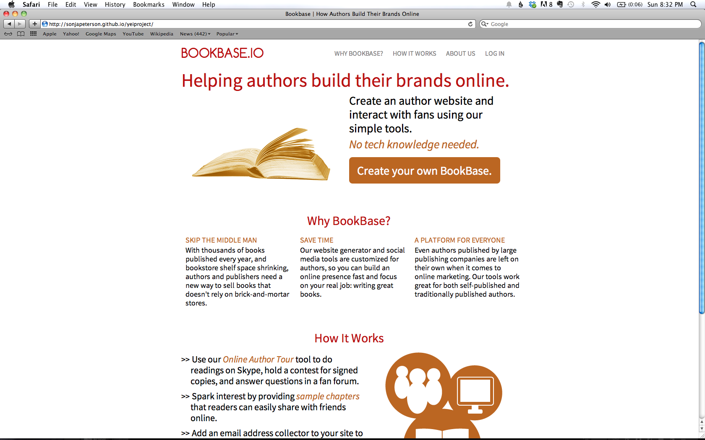

Projects
Web Design
Thinkful Blog Redesign

While working as a marketing intern at Thinkful in the summer of 2013, I redesigned their blog with a customized CSS Tumblr theme. I also created graphics for the blog using Adobe Illustrator. See more of my graphic design work for Thinkful here.
YEI Tech Bootcamp Application Project
I recently applied for the Yale Entrepreneurial Institute's Tech Bootcamp, and for the final round of the applications we were required to create a one-page mockup of the website we would build if technical skills were not an obstacle. My mockup is for a tool that would help authors create websites with built-in marketing tools, without needing any technical knowledge.
Writing
Yale Campus Publications
I contribute writing to the New Journal, a magazine about Yale and New Haven, and Broad Recognition, Yale's online feminist magazine.
Lake County News Chronicle
I worked at the Chronicle as reporter in the summers of 2010 and 2012, writing 2-3 local news articles per week as well as occasional op-ed columns.
Study Abroad Blog
I spent the spring of 2013 studying abroad at the University of St. Andrews, and wrote about it here.